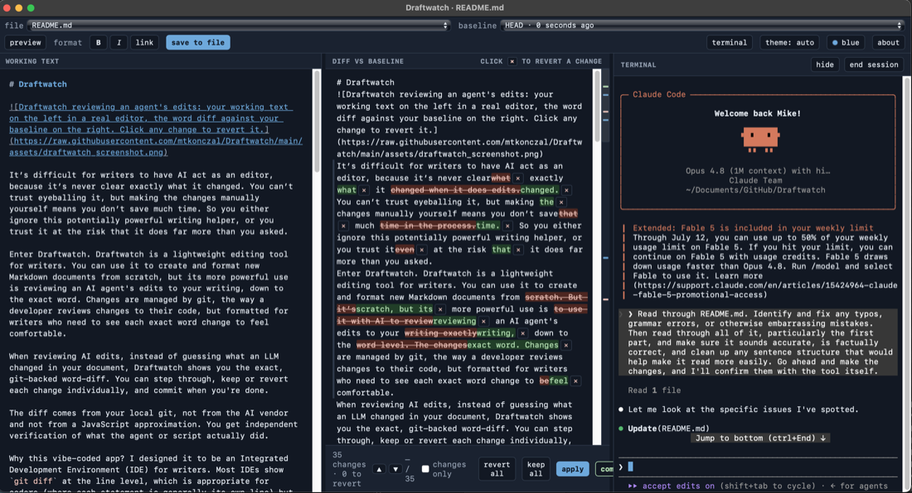

Draftwatch
Review an AI’s edits to your writing the way you’d review a pull request.

Draftwatch is a lightweight IDE for writers. You can use it to create and format new Markdown documents from scratch, or use it to review an AI agent’s edits to your writing exactly the way a developer reviews a pull request.
When reviewing AI edits, instead of guessing what an LLM changed in your document, Draftwatch shows you the exact, git-backed word-diff. You can step through, keep or revert each change individually, and commit when you’re done.
Crucially, the diff comes from your local git—not from the AI vendor and not from a JavaScript approximation. You get absolute, independent verification of what the agent or script actually did.
Python 3.9+ and git are the only requirements. The front-end libraries (CodeMirror 6, marked, DOMPurify, Turndown, xterm.js) are vendored and served locally, so Draftwatch works completely offline and binds to localhost only.
Install
Draftwatch is available on PyPI. You can install or run it using your preferred Python package manager:
# pipx
pipx install draftwatch
# uv
uv tool install draftwatch
# standard pip
pip install draftwatchUsage
Run it from inside a git repository you write in:
draftwatchOr to start with a specific file:
draftwatch draft.mdYou can also run it outside any git repository. Draftwatch starts in write-only mode — the editor, preview, and saving all work, but the review loop (diffs, revert, commit) is off because there’s no git to compare against. The right panel offers a one-click initialize git here to turn the folder into a repo and switch on the full review loop.
Starting a second instance while one is already running just works: if the default port is busy, Draftwatch picks a free one and prints the URL.
Draftwatch opens a two-panel review window: your source on the left (a real editor with markdown highlighting, search, and a live preview), the diff against your baseline on the right. Review the changes, revert the ones you don’t want, apply, then commit. Committing advances the baseline, so the next agent pass starts clean.
Start without a file (draftwatch) to pick one in the window.
Options
draftwatch [target] [--port 8787] [--no-open] [--no-terminal] [--app | --no-app]target: file to watch. Optional; omit it to pick one in the UI.--port: default8787. If omitted and the default is busy, Draftwatch picks a free port automatically; pass--portto pin an exact one (it then fails loudly if that port is taken).--no-open: don’t auto-open a window (useful headless or over SSH).--no-terminal: disable the embedded terminal panel entirely (its routes are removed from the server, not just hidden in the UI).--app/--no-app: force or disable the native window. It is on by default when pywebview is installed and falls back to the browser otherwise.
The terminal panel
Click terminal in the toolbar to open a third panel running a real shell in your repo (macOS/Linux). Launch claude, codex, or any command there: when the agent edits the file you’re watching, the diff panel lights up live — prompt on the right, review in the middle, write on the left. hide collapses the panel and leaves the shell running (an agent mid-task keeps working); end session kills the shell and everything it started. No snapshots are taken when you run commands — edits accumulate against whatever baseline you’ve selected, and you review them on your schedule. On Windows the panel is unavailable and Draftwatch simply runs without it.
Features
- Real git word-diffs, so what you see is exactly what git sees.
- Keep or revert changes one hunk at a time, or all at once, then commit from the UI.
- Switchable baseline: last push, HEAD, or an earlier commit.
- Jump between changes or collapse to a changes-only view for long documents.
- Editable markdown preview alongside the raw source.
- You and the agent can both edit; your unsaved work is never clobbered when the file changes on disk.
- Embedded terminal panel (macOS/Linux): run your agent next to the diff without leaving the window.
- Resizable panels: drag the dividers to change the split (double-click to reset).
Security
Draftwatch binds 127.0.0.1 only — there is deliberately no option to bind another interface, so the tool is never exposed on your network. Every request carries a per-session token, the Host and Origin headers are validated to defeat DNS-rebinding, and the markdown preview is sanitized with DOMPurify before rendering. The tool never talks to any LLM.
The terminal panel is a real shell, so it gets extra care: its input routes accept the session token only as a request header (keystrokes never appear in URLs, browser history, or logs), the server pipes bytes to the PTY without ever parsing them, ending a session kills the shell’s whole process group, and no shell outlives Draftwatch. --no-terminal removes the feature from the server entirely.
Tests
python3 testing/test_reconstruct.py # reconstruction invariants
python3 testing/test_acceptance.py # end-to-end server testsDevelopment
The front-end libraries are vendored into draftwatch/assets/ and committed, so end users never need Node. To rebuild them: npm install && npm run build:vendor.
License
MIT. See LICENSE.
This section is the project README, synced from GitHub — run scripts/sync-draftwatch-readme.sh to refresh it.